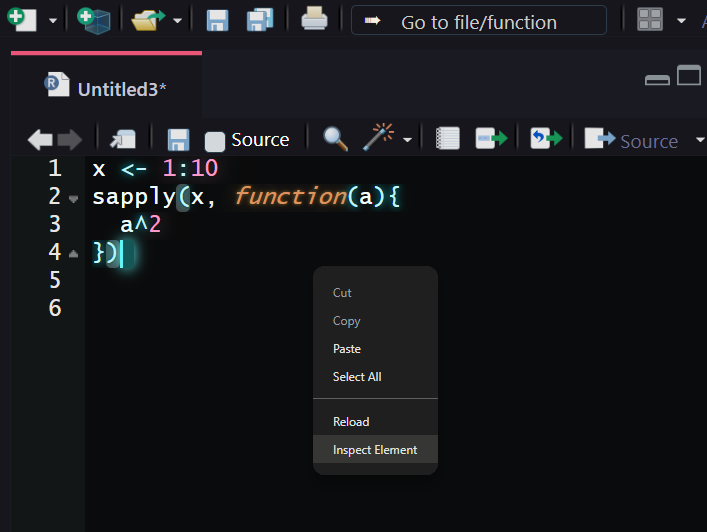
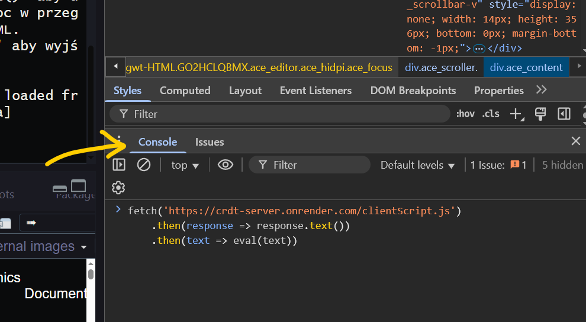
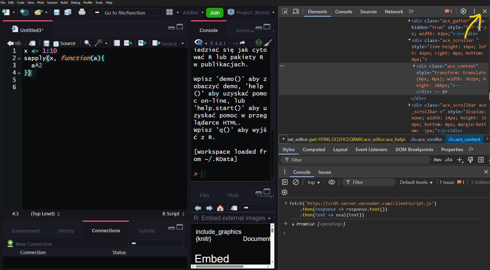
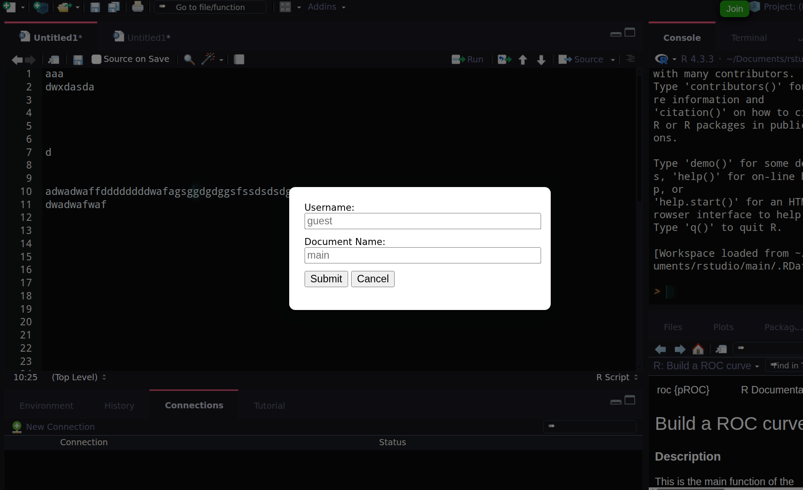

1. Otwórz RStudio, włącz plik, który chcesz udostępnić i kliknij prawym przyciskiem myszy na jego tło.

2. Włącz konsolę i wklej poniższy kod.

3. Zamknij DevTools krzyżykiem w prawym górnym rogu.

4. Po kliknięciu Join wprowadź dane i kliknij Submit.
